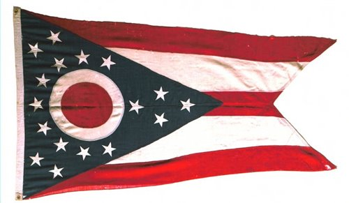
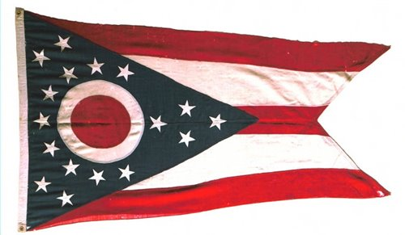

Info on States


 

Indiana is a Midwestern state known for its farmland and renowned auto race, the Indianapolis 500. In the capital, Indianapolis, theaters and galleries line Massachusetts Avenue, while Broad Ripple has hip bars and restaurants. The city’s Downtown is home to the iconic Soldiers and Sailors Monument, the Canal Walk promenade and the Indianapolis Museum of Art and its wide-ranging collections.
Michigan is the only state to consist of two peninsulas. The Lower Peninsula, to which the name Michigan was originally applied, is often noted to be shaped like a mitten. The Upper Peninsula (often referred to as "the U.P.") is separated from the Lower Peninsula by the Straits of Mackinac, a five-mile (8 km) channel that joins Lake Huron to Lake Michigan. The two peninsulas are connected by the Mackinac Bridge. The state has the longest freshwater coastline of any political subdivision in the world, being bounded by four of the five Great Lakes, plus Lake Saint Clair.As a result, it is one of the leading U.S. states for recreational boating.Michigan also has 64,980 inland lakes and ponds.[8] A person in the state is never more than six miles (9.7 km) from a natural water source or more than 85 miles (137 km) from a Great Lakes shoreline
Chicago was incorporated as a city in 1837, near a portage between the Great Lakes and the Mississippi River watershed, and grew rapidly in the mid-nineteenth century. The city is an international hub for finance, commerce, industry, technology, telecommunications, and transportation: O'Hare International Airport is the second busiest airport in the world when measured by aircraft traffic; the region also has the largest number of U.S. highways and rail road freight.In 2012, Chicago was listed as an alpha global city by the Globalization and World Cities Research Network,[7] and ranked seventh in the world in the 2014 Global Cities Index.Chicago has the third largest gross metropolitan product in the United States—about $630.3 billion according to 2014-2016 estimates. The Chicago metropolitan area is also home to several universities, including Northwestern University, University of Chicago, and University of Illinois at Chicago.
The state takes its name from the Ohio River. The name originated from the Iroquois word ohi-yo’, meaning "great river" or "large creek."Partitioned from the Northwest Territory, the state was admitted to the Union as the 17th state (and the first under the Northwest Ordinance) on March 1, 1803. Ohio is historically known as the "Buckeye State" after its Ohio buckeye trees, and Ohioans are also known as "Buckeyes." The government of Ohio is composed of the executive branch, led by the Governor; the legislative branch, which comprises the Ohio General Assembly; and the judicial branch, which is led by the state Supreme Court. Ohio occupies 16 seats in the United States House of Representatives.[24] Ohio is known for its status as both a swing state[25] and a bellwether[25] in national elections. Six Presidents of the United States have been elected who had Ohio as their home state.
| Capital | Population | Stars |
|---|---|---|
| Indianapolis | 500000 | 5 |
| Capital | Population | Stars |
|---|---|---|
| Lansing | 9,922,576 | 5 |
| Capital | Population | Stars |
|---|---|---|
| Illinios | 2,720,546 | 5 |
| Capital | Population | Stars |
|---|---|---|
| Ohio | 2,720,546 | 4 |